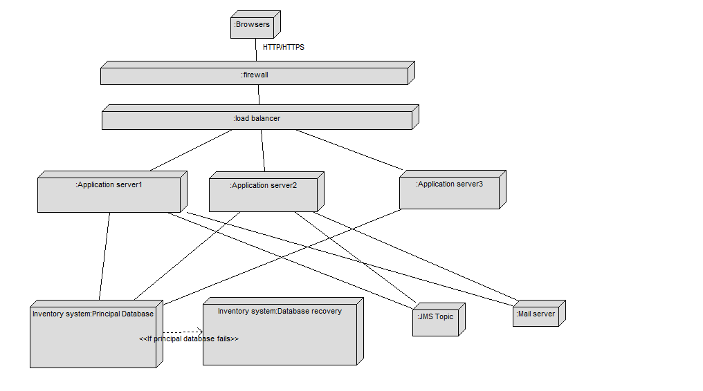

Deployment diagrams
- This is the general deployment diagram that will be use for the application :

- The application server will contains the bigsmokes EAR application which will be divided in 2 parts : the war and the EJB. We will not use a web container because it will be to heavy for the network and there is no need of it. We will use a glassfish server 2.1 or 3 for the application server. Glassfish is the reference server for JEE 5 and it is free. The performance of this server are very good.
- The war archive will be in the EAR and it will contains the presentation part, the controller part, the managed bean, the business delegate and the locator.
- JSP : SearchCigar.jsp, ViewCigar.jsp, ShopCart.jsp, checkorder.jsp, confirmcheckorder.jsp
- Servlet : FacesServlet
- Managed bean : ManageCigarAction, ManageCartAction
- Service locator : ServiceLocator
- Business delegate : ManageCigarDelegate, ManageCartDelegate, OrderDelegate
- The EJB jar will be contains in the EAR. The EAR will be managed by the application server. The EJB jar contains the session bean (Stateful and stateless), the entity bean and the message driven bean.
- stateful session bean : ManageCartBean
- stateless session bean : ManageCigarBean, OrderBean
- message driver bean : EMailSenderBean
- EntityBean : Cigar, Order, CigarOrderLine, Category
- The database contains all the database table for cigars. It is the inventory system. It already exists. For the order tables, we have to create them.
- The application servers will be accessible from internet behind a firewall in a DMZ to decrease seriously the risk of attack.